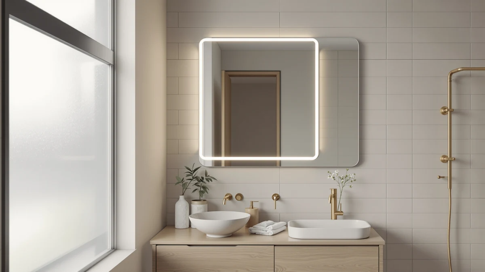

FlyEcho LED Bathroom Mirror Review (2026): Worth It?
Prices and picks verified as of November 2026. Independent, reader-supported reviews.


Quick Answer
For this FlyEcho LED bathroom mirror review, we compared the 30x48 pick against the Autdot, MYSUNORIA, and TokeShimi alternatives on price, build, and size. At $129.99, the FlyEcho costs about the same as the Autdot two-piece set and a few dollars more than the MYSUNORIA and TokeShimi, but it's the only one of the four built as one wide LED mirror sized for a double-sink vanity.
Our pick: 30"x48" LED Bathroom Mirror with, $129.99 Check Price on Amazon
Bottom line: our top pick is the 30"x48" LED Bathroom Mirror with Lights at $129.99.
Things to Know Before You Buy
- Size and fit: at 48 inches long and 30 inches wide, the FlyEcho mirror is built for a wide single or double-sink vanity, not a narrow powder room wall, so measure your wall run before you order it.
- Build: the frame pairs tempered glass with an aluminum frame, a sturdier combination than the fully frameless glass used on the Autdot and TokeShimi alternatives.
- Price range: at $129.99, the FlyEcho costs about the same as the $129.97 Autdot two-piece set and a few dollars more than the $122.54 MYSUNORIA and $121.79 TokeShimi mirrors we compared it against.
- Reviews: this listing has not yet published an aggregate rating or review count, so this FlyEcho LED bathroom mirror review leans on the listed specs and price rather than a long buyer track record.
- Lighting: the "LED" in the product name points to built-in lighting, a feature the TokeShimi alternative skips since it's a plain beveled mirror.
This FlyEcho LED bathroom mirror review compares the 30x48 model's price, build and size against three similarly priced mirrors to see which one earns a spot above your vanity. At $129.99, the FlyEcho sits close to the $129.97 Autdot two-piece set and a few dollars above the $122.54 MYSUNORIA and $121.79 TokeShimi, so price alone won't settle the decision here.
The tempered glass and aluminum build on the 48x30 panel makes it the stronger pick for a wide single or double-sink vanity that wants one continuous LED mirror, while a narrower wall or a tighter budget points toward the smaller MYSUNORIA or TokeShimi instead. Below, we break down what the FlyEcho's size and construction get you, how its price stacks up against the other three, and which bathroom layout fits each one best.
Why You Should Trust Us
Ilane Tall covers bathroom fixtures and mirrors for Best Bathroom Mirrors, and this FlyEcho LED bathroom mirror review follows the same process used across the site. We research published specs, compare current Amazon pricing across models in a given size and price range, and read verified buyer feedback instead of relying on marketing copy. We do not run a fake testing lab or claim to have installed any of the mirrors we cover, and when a detail isn't confirmed in the listing, we say so instead of guessing.
For this comparison, that means we pulled the listed dimensions, materials, and current price for the FlyEcho and the three alternatives, noted the date those prices were checked, and flagged that none of the four listings have a published rating or review count yet. Readers shopping the LED bathroom mirror category deserve to know whether a claim comes from the product listing or from something we flagged as unconfirmed.
Our Research Experience
Because this is a research-based review, our process for this FlyEcho LED bathroom mirror review centers on comparing the listed specs, mounting size, and pricing rather than installing the mirror ourselves. We checked how the FlyEcho's tempered glass and aluminum frame, at 48 inches long and 30 inches wide, stacks up against the Autdot, MYSUNORIA, and TokeShimi alternatives, then lined up current pricing across all four, from $121.79 to $129.99.
We also compared the Autdot two-piece arched set against the three single-mirror options, since it competes for similar wall space at $129.97 but splits that space into two smaller arched pieces instead of one continuous panel. Shoppers researching the LED bathroom mirror category should treat the lit-versus-unlit choice, not price, as the main trade-off here, since the TokeShimi drops LED lighting entirely to hit its lower price point.
Overview & Specs

30"x48" LED Bathroom Mirror with
What we like
- At 48 inches long, it covers a double-sink vanity without needing two separate mirrors
- The tempered glass and aluminum frame gives it a sturdier feel than the fully frameless Autdot and TokeShimi alternatives
- Built-in LED lighting means you skip buying a separate vanity light fixture
Flaws but not dealbreakers
- At $129.99, it costs about the same as the two-piece Autdot set and a few dollars more than the MYSUNORIA and TokeShimi alternatives
- No published Amazon rating or review count yet, so there's less buyer feedback to draw on than with longer-established listings
- A 48-inch mirror needs a full double-sink wall run, so it won't fit a narrow single-sink layout the way the smaller alternatives will
| Material | Tempered glass + aluminum |
| Size | 48"L x 30"W |
The FlyEcho 30x48 LED Bathroom Mirror earns its place in this FlyEcho LED bathroom mirror review mainly on size and build. At 48 inches long and 30 inches wide, it covers enough wall space for a double-sink vanity without mounting two separate mirrors side by side, and the tempered glass paired with an aluminum frame gives it a sturdier feel than the frameless glass used on the Autdot and TokeShimi alternatives. For a primary bathroom remodel where one continuous LED mirror is part of the plan, this size and build fit the brief.
Price and size narrow who it works for. This mirror runs $129.99, close to the $129.97 Autdot two-piece set and a few dollars past the $122.54 MYSUNORIA and $121.79 TokeShimi, and Amazon has not yet published a rating or review count for this listing, so you're weighing the spec sheet and price rather than a long track record of verified buyers. The 48-inch width also commits you to a double-sink wall run, so a narrower single-sink vanity is better served by the correctly sized MYSUNORIA or TokeShimi below.
What We Liked
This FlyEcho LED bathroom mirror review turns up one clear strength: size. At 48 inches long, it covers a double-sink vanity in one continuous panel instead of forcing you to line up two smaller mirrors, and the built-in LED lighting replaces the separate vanity light many homeowners would otherwise have to buy and wire in.
The tempered glass and aluminum frame also give it a sturdier feel than the frameless glass on the Autdot and TokeShimi alternatives. Compared with the MYSUNORIA at a similar price, the FlyEcho trades eight inches of width for better coverage over a wider vanity, and for a double-sink bathroom, that trade makes sense. A wide vanity often ends up with two mismatched mirrors purchased at different times, and this listing avoids that problem by covering the whole run with a single piece of glass.
What Could Be Better
Price parity is the clearest drawback. This mirror runs $129.99, putting it right alongside the $129.97 Autdot set and a few dollars past the $122.54 MYSUNORIA and $121.79 TokeShimi, and that gap is hard to justify on size alone without a published Amazon rating to back it up.
Because the listing has no review count yet, you're taking on more of the buying risk yourself than you would with a mirror that already has a long track record of verified owner ratings. If that uncertainty matters more to you than the extra width, the MYSUNORIA gives you LED lighting in a smaller footprint for less money while you wait for reviews to accumulate on this FlyEcho listing.
Who Is It For?
This mirror makes the most sense for homeowners with a double-sink vanity who want one continuous LED mirror instead of two smaller pieces, and who are comfortable paying for that extra width. If your bathroom has a single sink or a narrower wall, the smaller MYSUNORIA or TokeShimi alternatives below are a better match for this FlyEcho LED bathroom mirror review's size comparison.
Renters and anyone furnishing a smaller bathroom should also weigh the size commitment before buying, since a 48-inch mirror is harder to fit into a future, narrower layout than the smaller alternatives would be. A primary bathroom you plan to keep for years, with a full double-sink wall already in place, is where this size makes the most sense. Shoppers who are still finalizing their layout should settle on the final vanity width first, since swapping a 48-inch mirror for a smaller one later means patching extra wall anchors.
Alternatives to Consider
If the price, size, or LED lighting of the FlyEcho pick doesn't fit your bathroom, these three alternatives cover a decorative two-piece arched set, a narrower LED option, and a non-LED beveled mirror.

Also Great
Autdot 2-Pack Arched Mirror Wall
A two-piece set of frameless arched wall mirrors rather than one LED panel, worth a look if you want a decorative split-mirror look over a sink instead of a single wide fixture.
$129.97
Check Price on Amazon
Also Great
40"x30" LED Bathroom Mirror with
A narrower 40x30 LED mirror that costs $7.45 less than the FlyEcho pick, worth considering if your vanity is single-sink width and you still want built-in lighting.
$122.54
Check Price on Amazon
Best Value
TokeShimi 30x36 Beveled Bathroom Mirror
A 30x36 beveled mirror without LED lighting, the cheapest of the four at $121.79 and worth it if you don't need built-in light and want a smaller, simpler mirror.
$121.79
Check Price on AmazonFrequently Asked Questions
Is the FlyEcho 30x48 LED bathroom mirror worth the $129.99 price?
At $129.99, the FlyEcho sits in the middle of the four mirrors in this comparison, a few cents below the $129.97 Autdot two-piece set and above the $122.54 MYSUNORIA and $121.79 TokeShimi. It's worth it if you want one 30x48 LED mirror with a tempered glass and aluminum build for a double-sink vanity. If you need two smaller mirrors or don't need LED lighting, one of the three alternatives below may fit better.
What size vanity does the FlyEcho 30x48 LED mirror fit?
At 48 inches long and 30 inches wide, per the listed dimensions, the FlyEcho mirror is built for a wide single or double-sink vanity. The MYSUNORIA alternative runs smaller at 40x30, and the TokeShimi is smaller still at 30x36, so measure your wall space before choosing between them.
How does the FlyEcho compare to the Autdot, MYSUNORIA, and TokeShimi alternatives?
The Autdot is a 2-pack of frameless arched wall mirrors at $129.97, a different format built for a decorative split look rather than one LED mirror over a sink. The MYSUNORIA is a 40x30 LED bathroom mirror at $122.54, a smaller alternative in the same lit-mirror category. The TokeShimi is a 30x36 beveled mirror at $121.79 without LED lighting, the most affordable but least feature-matched option of the three.
Final Verdict
The verdict on this FlyEcho LED bathroom mirror review comes down to size and wall space. For a double-sink vanity where you want one continuous LED mirror, the FlyEcho 30x48 LED Bathroom Mirror with its tempered glass and aluminum frame is the strongest pick in this comparison, even at its $129.99 price. If your sink wall is narrower or you don't need built-in lighting, the MYSUNORIA and TokeShimi alternatives cover smaller footprints for less money, and the Autdot two-piece arched set is worth a look if you want a decorative split-mirror look instead of one wide panel. Match the mirror width to your actual wall run before you buy any of them, since that measurement rules a model in or out faster than price does.